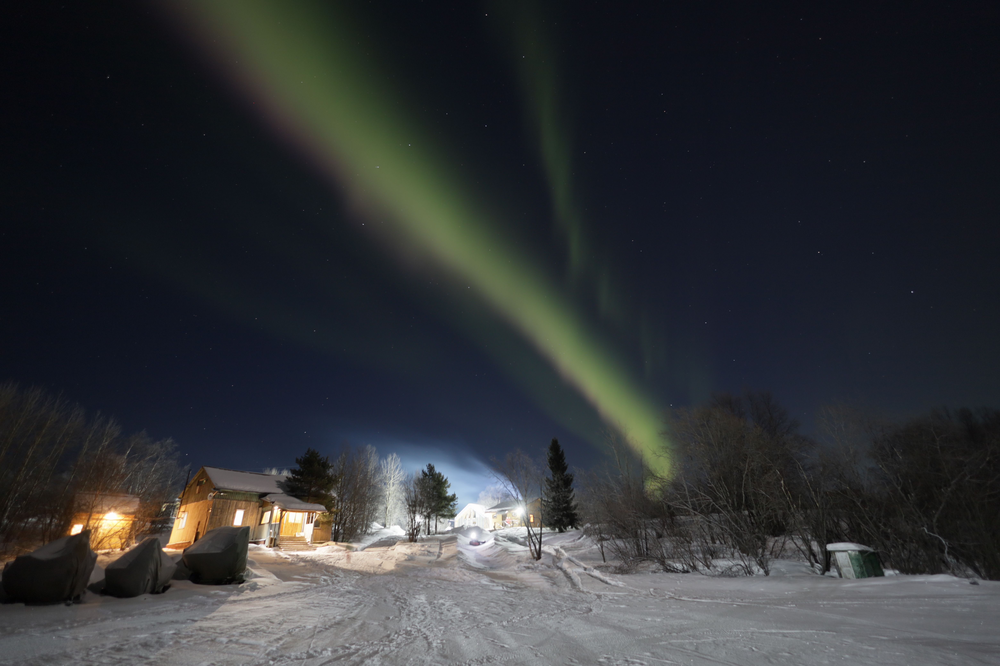

Fetching live weather from met.no…
Weather could not be loaded
Something went wrong.
Current conditions
--
Waiting for data
- Wind
- --
- Cloud cover
- --
- Humidity
- --
- Data time (Yellowknife)
- --
- Last updated
- --
Lab 6 · Working with API
Live weather for Yellowknife, Northwest Territories (62.4540° N, 114.3718° W). Temperature sets the colour of the page, cloud cover dims the aurora and hides the stars, and wind speed sets how fast the snow drifts.

Something went wrong.
--
Waiting for data